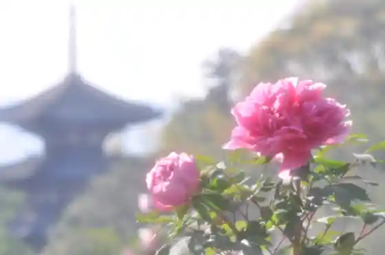
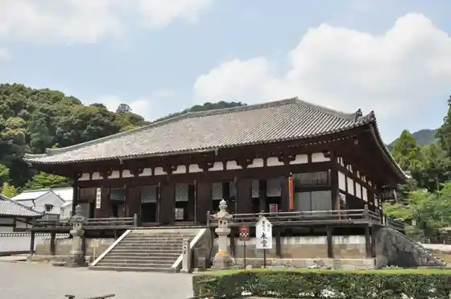
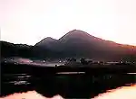
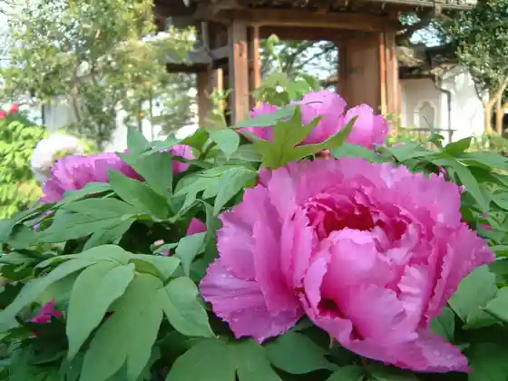

Toma Jichu Yuki Bo
Katsuragishi, Nara · 0745-48-2001 · Official / source link
Toma Tera Oku In
Katsuragishi, Nara · 0745-48-2008 · Official / source link

Toma Tera
Katsuragishi, Nara · Official / source link

Futagami Yama
Katsuragishi, Nara · 0745-48-2811 · Official / source link

Ishimitsu Tera
Katsuragishi, Nara · 0745-48-2031 · Official / source link

Toma Teranishi Nan'in
Katsuragishi, Nara · 0745-48-2202 · Official / source link
Katsuragishi Sumo Kan (Kehaya Za)
Katsuragishi, Nara · 0745-48-4611 · Official / source link
Roadside Station
Katsuragishi, Nara · 0745-48-1147 · Official / source link
Kazuraki Za Karai Shrine [ Usui Shrine ]
Katsuragishi, Nara · 0745-62-5024 · Official / source link
Katsuragishi Sanroku Park
Katsuragishi, Nara · 0745-69-7501 · Official / source link
Futagami Yama Furusato Park
Katsuragishi, Nara · 0745-48-7800 · Official / source link
Roadside Station Futakami Park Toma
Katsuragishi, Nara · 0745-48-7000 · Official / source link
Nagao Shrine (Katsuragishi)
Katsuragishi, Nara · 0745-48-3018 · Official / source link
Shiawase no Mori Park
Katsuragishi, Nara · 0745-44-5013 · Official / source link
Toma Tera Gonen In
Katsuragishi, Nara · 0745-48-2004 · Official / source link
Residence Yama Park
Katsuragishi, Nara · 0745-69-5131 · Official / source link
Katsuragishi History Museum
Katsuragishi, Nara · 0745-64-1414 · Official / source link
Tanabata Shrine
Katsuragishi, Nara · Official / source link
Toma Tera Shu Tane In
Katsuragishi, Nara · 0745-48-2649 · Official / source link
Toma Tera Oku In Takaramono Kan
Katsuragishi, Nara · 0745-48-2008 · Official / source link
Nogyo Kumiai Hojin Ratte Takamatsu
Katsuragishi, Nara · 0745-62-3953 · Official / source link
Toma Tera Sen Hotoke In
Katsuragishi, Nara · 0745-48-2612 · Official / source link
Sho Kuwa Shrine
Katsuragishi, Nara · 0745-69-3910 · Official / source link
Noji Kumiai Hojin Toma no Ie
Katsuragishi, Nara · 0745-48-7000 · Official / source link
Takeuchi Kaido
Katsuragishi, Nara · 0745-48-2811 · Official / source link
Kasa Do
Katsuragishi, Nara · 0745-48-2811 · Official / source link